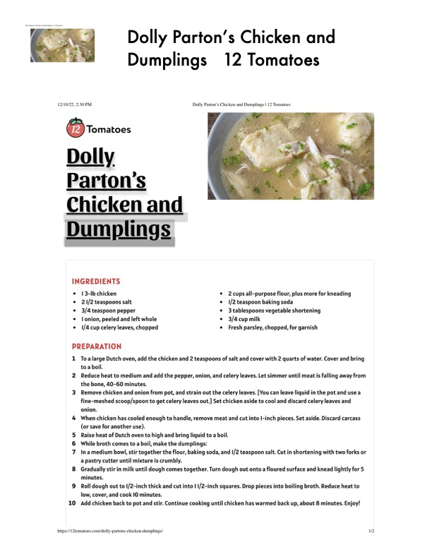

Dolly Parton's Chicken and

Original cookbook page 395
Ingredients
- 13-Ib chicken 2 cups all-purpose flour, plus mor
- 21/2 teaspoons salt 1/2 teaspoon baking soda
- * 3/4 teaspoon pepper 3 tablespoons vegetable shorteni:
- l onion, peeled and left whole
- 1/4 cup celery leaves, chopped
- 3/4 cup milk
- Fresh parsley, chopped, for garnis
- PREPARATION
- To a large Dutch oven, add the chicken and 2 teaspoons of salt and cover with 2 quarts of wat
- toaboil.
- 2 Reduce heat to medium and add the pepper, onion, and celery leaves. Let simmer until meat
- the bone, 40-60 minutes.
- 3 Remove chicken and onion from pot, and strain out the celery leaves. [You can leave liquid in
- fine-meshed scoop/spoon to get celery leaves out.] Set chicken aside to cool and discard cel
- onion.
- 4 When chicken has cooled enough to handle, remove meat and cut into I-inch pieces. Set asic
- (or save for another use).
- 5 Raise heat of Dutch oven to high and bring liquid to a boil.
- 6 While broth comes to a boil, make the dumplings:
- 7 Inamedium bowl, stir together the flour, baking soda, and |/2 teaspoon salt. Cut in shorteni
- a pastry cutter until mixture is crumbly.
- 8 Gradually stir in milk until dough comes together. Turn dough out onto a floured surface anc
- minutes.
- 9 Roll dough out to 1/2-inch thick and cut into | I/2-inch squares. Drop pieces into boiling brot
- low, cover, and cook 10 minutes.
- 10 Add chicken back to pot and stir. Continue cooking until chicken has warmed back up, about
- bhups:/12tomatoes.com/dolly-partons-chicken-dumplings/
Instructions
- 13-Ib chicken 2cupsall-purpose flour, plus more for kneading
- 1/4 cup celery leaves, chopped e Fresh parsley, chopped, for garnish PREPARATION
- Toalarge Dutch oven, add the chicken and 2 teaspoons of salt and cover with 2 quarts of water.
- Reduce heat to medium and add the pepper, onion, and celery leaves.
- Let simmer until meat is falling away from the bone, 40-60 minutes.
- Remove chicken and onion from pot, and strain out the celery leaves.
- [You can leave liquid in the pot and use a fine-meshed scoop/spoon to get celery leaves out.] Set chicken aside to cool and discard celery leaves and onion.
- When chicken has cooled enough to handle, remove meat and cut into I-inch pieces.
- Raise heat of Dutch oven to high and bring liquid to a boil.
- While broth comes to a boil, make the dumplings:
- In a medium bowl, stir together the flour, baking soda, and I/2 teaspoon salt.
- Cut in shortening with two forks or a pastry cutter until mixture is crumbly.
- Gradually stir in milk until dough comes together.
- Turn dough out onto a floured surface and knead lightly for 5 minutes.
- Roll dough out to I/2-inch thick and cut into I 1/2-inch squares.
- Drop pieces into boiling broth.
- Reduce heat to low, cover, and cook [0 minutes.
- Add chicken back to pot and stir.
- Continue cooking until chicken has warmed back up, about 8 minutes.
Recipe #395 from collection